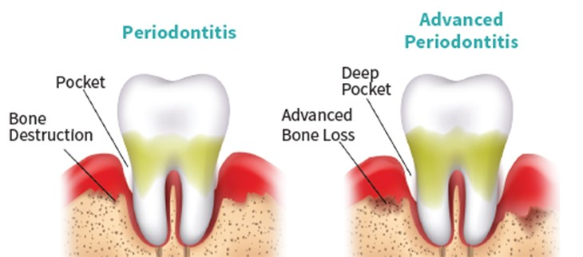
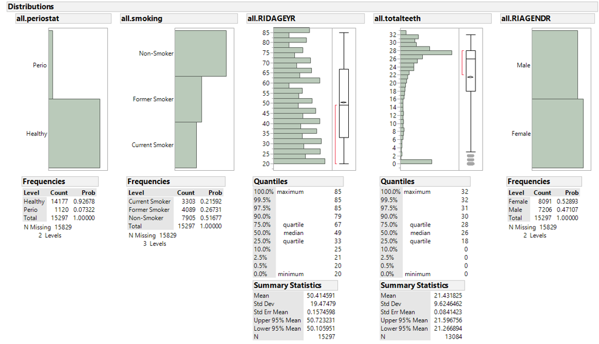
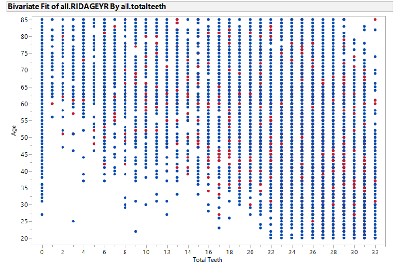
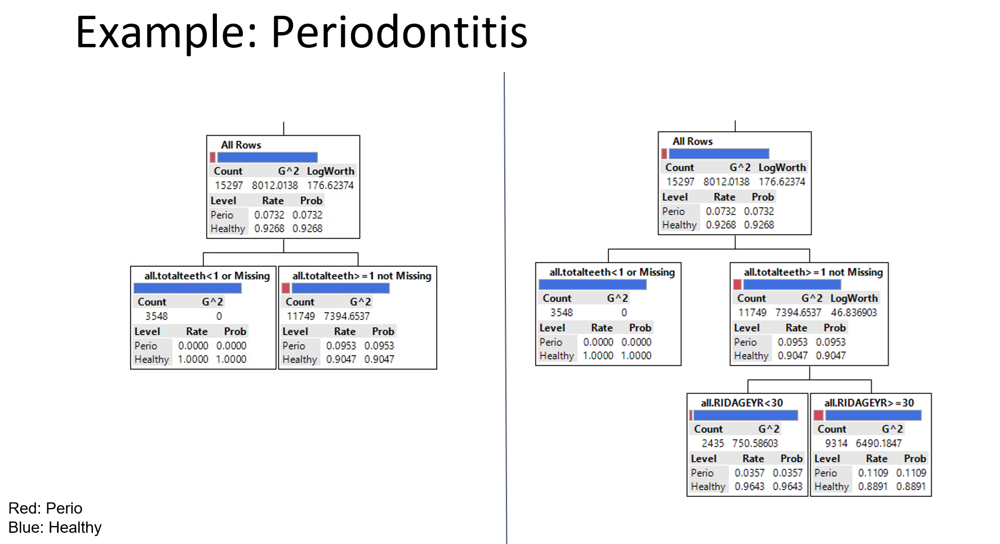

Introduction to CART Modeling
Introduction to CART Modeling
Understanding the Basics of CART and Its Application in Research
Classification and Regression Trees (CART) are powerful tools for predictive modeling, capable of handling both categorical and continuous outcomes. CART is used extensively in healthcare research and the basis of more advanced tree methods meant to predict key health outcomes and uncover relationships in complex datasets.
Define CART Modeling
CART builds a decision tree to predict the outcome variable based on the input variables. It splits the data into subsets based on the value of input variables, aiming to create the most homogeneous subsets possible.
Real-World Examples of Decision Trees
- Healthcare Diagnosis: Predicting whether a patient has a disease based on symptoms and test results.
- Treatment Recommendations: Suggesting personalized treatment plans based on patient history and characteristics.
Periodontitis

Periodontitis is a serious gum infection that damages the soft tissue and destroys the bone that supports your teeth. It can cause teeth to loosen or lead to tooth loss. Periodontitis is common but largely preventable. It’s usually the result of poor oral hygiene. Daily brushing and flossing, along with regular dental checkups, can greatly reduce your chance of developing periodontitis.
The data: National Health and Nutrition Examination Study (NHANES) from 1999-2004. Approximately 15,000 observations. Primary outcome is whether the subject got periodontitis (yes/no). Explanatory or Predictor Variables: Smoking Status, Age, Total Teeth, and Gender.

A simple cross-section of two variables by the outcome (color: blue=no perio, red=perio), looking for tree splits that classify the outcome accurately. Can you find any splits with age and total teeth?

A tree of depth 2 (left) and tree of depth 3 (right).

Types of Outcomes: Categorical and Continuous
- Categorical Outcomes: Use classification trees when predicting a categorical outcome, such as whether a disease is present (yes/no). These trees provide the probability of each category as the outcome.
- Continuous Outcomes: Use regression trees when predicting a continuous outcome, such as blood pressure levels. These trees provide the average outcome value for individuals in the dataset who follow the specific path defined by the tree.
Graphical Representations
Decision trees are represented graphically with nodes and branches: - Decision Nodes: Represent decisions or splits based on input variables. - Leaf Nodes: Represent the final outcome or prediction.
How and When to Split
Splitting in a decision tree is based on criteria such as: - Gini Impurity: Used for classification, aiming to create pure subsets. - Mean Squared Error (MSE): Used for regression, aiming to minimize variance within subsets.
Pros and Cons of CART Modeling
Pros: - Easy to interpret and visualize. - Can handle both numerical and categorical data. - No need for data normalization or scaling.
Cons: - Can overfit the data, leading to poor generalization. - Sensitive to small changes in the data. - May require pruning to remove unnecessary branches.
Example CART Model
To illustrate a CART model, consider predicting diabetes based on patient characteristics:
- Load Data: Prepare the dataset containing patient features and diabetes status.
- Define Model: Specify the CART model parameters.
- Train Model: Fit the CART model to the data.
- Evaluate Model: Assess the model’s performance using metrics like accuracy and ROC curve.
Hands-on Exercise: Building a CART Model Based on Students’ Own Decisions
You can use the Titanic_Passengers dataset for this example. This dataset contains information on the survival status of Titanic passengers.
JMP Instructions:
JMP Instructions:
-
Go to
Analyze>Predictive Modeling>Partition. - Select the response variable and predictor variables.
-
Click
OKto build the tree.
R Code Example:
R Code Example:
-
# Load necessary libraries library(rpart) library(rpart.plot) # Load the dataset Passengers <- read.csv("Titanic_Passengers.csv") # adust path # Define the CART model model <- rpart(Survived ~ Sex+Age+Passenger.Class+Port, data = Passengers , method = "class") # Plot the decision tree rpart.plot(model)
Python Code Example with Titanic data:
Python Code Example:
-
from sklearn.tree import DecisionTreeClassifier from sklearn import tree import pandas as pd # Load the dataset passengers = pd.read_csv('Titanic_Passengers.csv') X = passengers[['Sex', 'Age', 'Passenger.Class', 'Port']] y = passengers['Survived'] # Define the CART model model = DecisionTreeClassifier() # Train the model model.fit(X, y) # Plot the decision tree tree.plot_tree(model)
SPSS Instructions:
SPSS Instructions:
-
Go to
Analyze>Classify>Tree. - Select the dependent variable and independent variables.
- Choose the type of tree (e.g., CHAID, CRT).
-
Click
OKto run the analysis.
SPSS Code Instructions:
-
* Use SPSS inbuilt customer data as an example (modify the file path) GET FILE='C:\Program Files\IBM\SPSS\Statistics\22\Samples\English\customer_subset.sav'. * Decision Tree Dependent: home ownership ,Indep VARS education age and income TREE homeown [n] BY ed [s] age [s] inccat [o] /TREE DISPLAY=TOPDOWN NODES=STATISTICS BRANCHSTATISTICS=YES NODEDEFS=YES SCALE=AUTO /DEPCATEGORIES USEVALUES=[0 1] /PRINT MODELSUMMARY CLASSIFICATION RISK /METHOD TYPE=CHAID /GROWTHLIMIT MAXDEPTH=AUTO MINPARENTSIZE=100 MINCHILDSIZE=50 /VALIDATION TYPE=NONE OUTPUT=BOTHSAMPLES /CHAID ALPHASPLIT=0.05 ALPHAMERGE=0.05 SPLITMERGED=NO CHISQUARE=PEARSON CONVERGE=0.001 MAXITERATIONS=100 ADJUST=BONFERRONI INTERVALS=10 /COSTS EQUAL.
Stata Code Example:
Stata Code Example:
-
// Load the auto data in stata sysuse auto,clear // browse to see the cols and rows ofthe data browse // use the help function to review crtrees module help(crtrees) // Define and fit the CART model (regression tree) : continuous outcome crtrees price trunk weight length foreign gear_ratio, seed(12345) detail tree // Define and fit the CART model (classification tree): categorical outcome crtrees foreign price trunk weight length gear_ratio,classification impurity(gini)tree